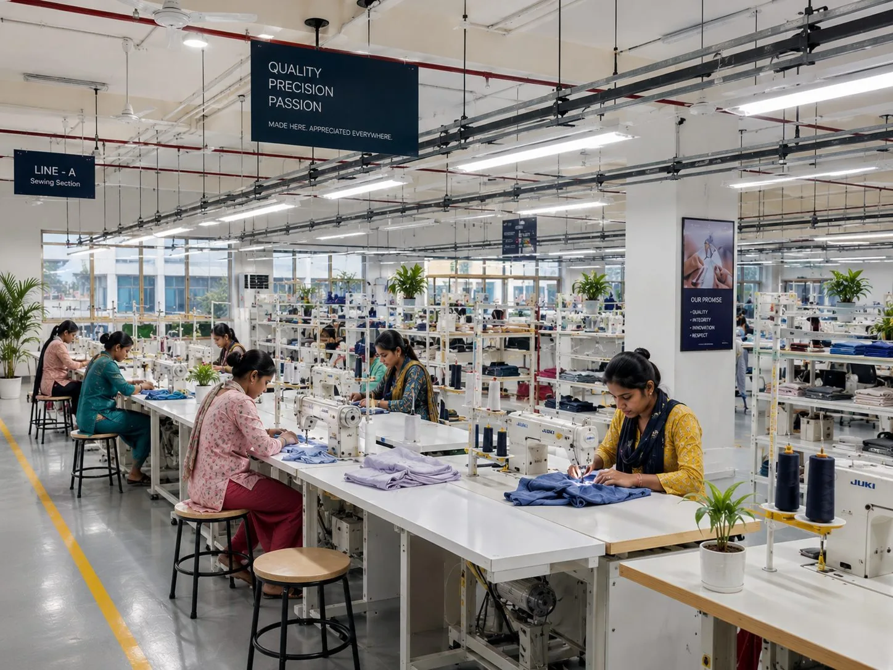

Meena Sethi
Founder & Chairperson
Orient Fashions began in 1973 with Meena Sethi — a homemaker with an entrepreneurial spirit and an instinct for opportunity. Five decades on, it is among the distinguished garment manufacturers in India, with five facilities and a third generation at the table.

Founder & Chairperson · 1973
When a relative moved to the UK, she saw the possibility of taking Indian craftsmanship beyond its borders. What started with a small order soon became Orient Fashions' very first export shipment — carefully packed on the third floor of her own home.
From those beginnings, she built the company around values that remain at its heart today: integrity, quality, hard work and relationships that last. More than five decades later, she remains the guiding force behind the family and the business she began from home.
"We never set out to build something big; we simply believed that if we made something with care, the world would find a place for it."
— Meena Sethi
A steady pattern of bringing one more step of the process in-house — embroidery, lace and print — until very little needed to leave the building.
Orient Fashions is founded, with its first export order shipped to the United Kingdom — the beginning of a journey from a home-grown enterprise to a global manufacturing partner.
Four years in, Orient Fashions diversifies into the European market, establishing relationships with international fashion brands.
Orient Fashions expands into the United States and Canada, beginning partnerships with North American brands.
The first in-house manufacturing facility is established in Delhi NCR, bringing greater control over craftsmanship, quality and production.
A second manufacturing facility strengthens production capabilities to support a growing international customer base.
In-house lace manufacturing further strengthens expertise in detailing and surface development.
A major step towards vertical integration with a large-scale, computerised embroidery facility — bringing intricate value addition under one roof.
The third manufacturing facility is established, marking another milestone in growing production capacity.
The company moves upstream with in-house fabric weaving, gaining closer control over fabric development. The weaving unit ran until 2011–12, when it was closed.
A fourth manufacturing facility in Delhi NCR continues the investment in scale, infrastructure and operational excellence.
The fifth manufacturing unit is established, further expanding the company's manufacturing footprint and capacity.
A state-of-the-art in-house digital printing facility enables greater speed, flexibility and creative possibility in print development.
Investment in automating critical garment construction processes — delivering exceptional precision, higher productivity and consistent quality across every garment.
Manufacturing capacity grows by 25%, strengthening our ability to support partners at scale.
AI is integrated across production line optimisation, lean manufacturing, design iterations, fit accuracy, automated SAM estimation and workforce skill assessment — enabling seamless line turnovers and five times faster tailor testing and grading.
A new factory in Jewar opens by the end of 2027, close to the region's new international airport.
Vision
To shape the future of fashion by combining exceptional design, responsible manufacturing and lasting partnerships — creating products that inspire people while respecting our planet.
Mission
To empower global fashion brands through innovative design, ethical manufacturing and sustainable practices — delivering beautifully crafted apparel with uncompromising quality, transparency and care.
Every factory SLCP verified at an Outstanding rating. Higg FEM average above 89%. 20 independent certifications and verifications.
The family that founded Orient still runs it — alongside department heads who have spent two, three and four decades on our floors.
Founder & Chairperson
Managing Director
Managing Director
Senior Marketing Analyst
Senior Operations Analyst